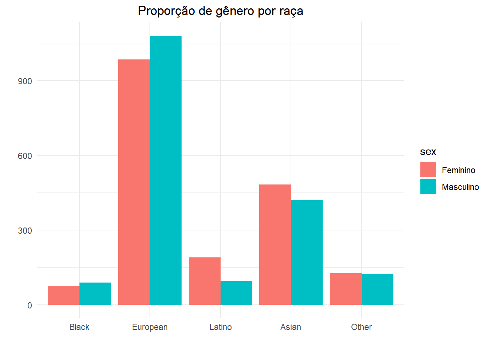
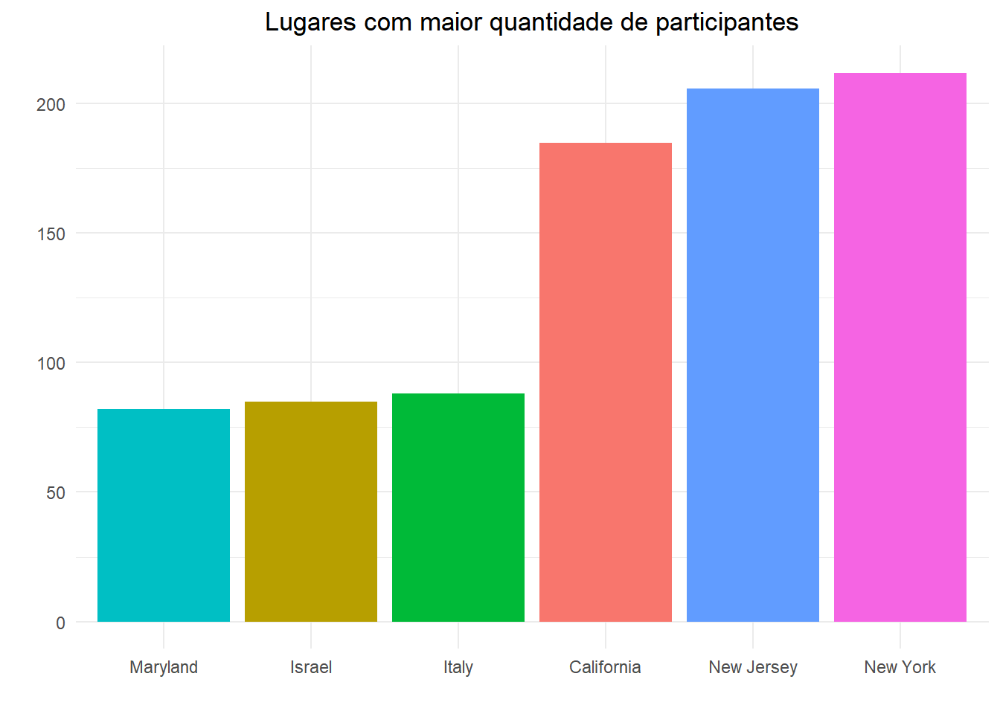
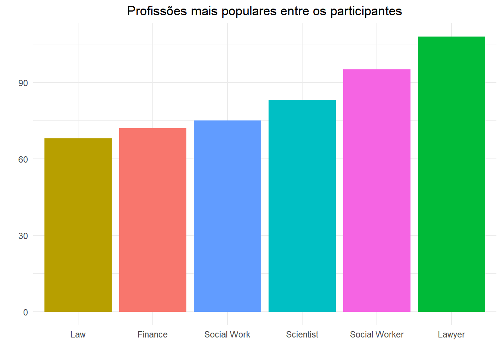
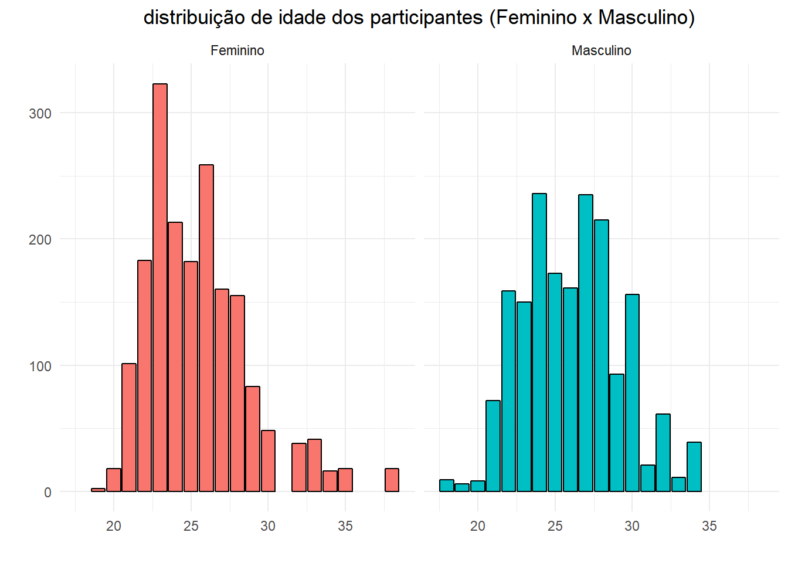
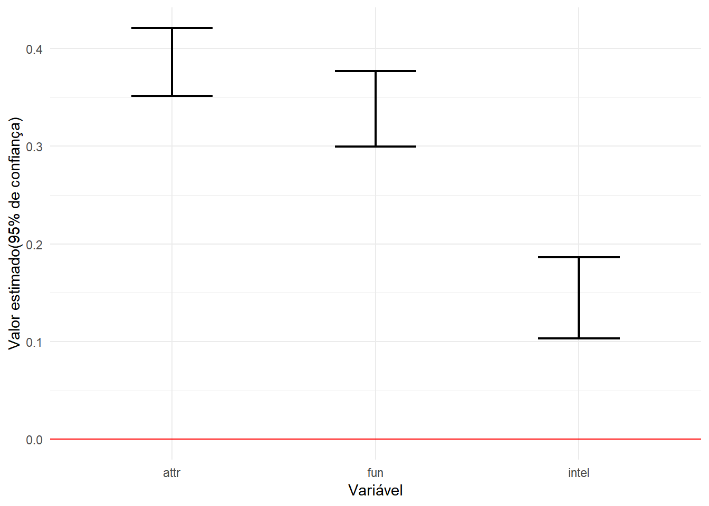
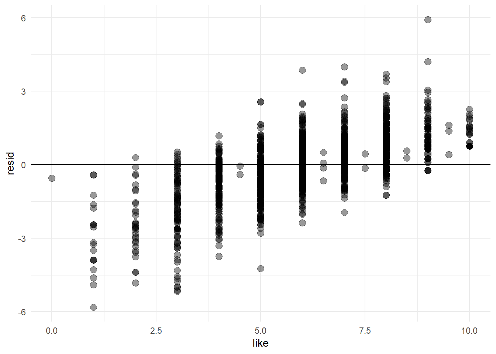
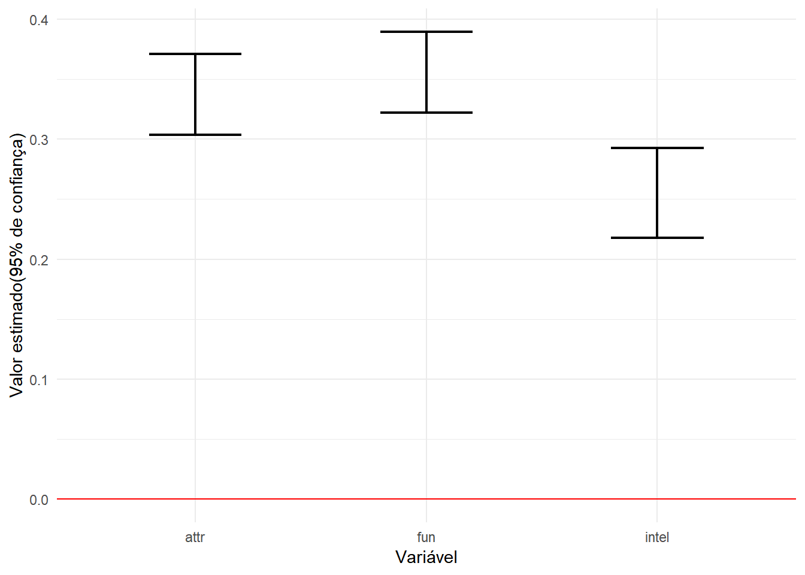
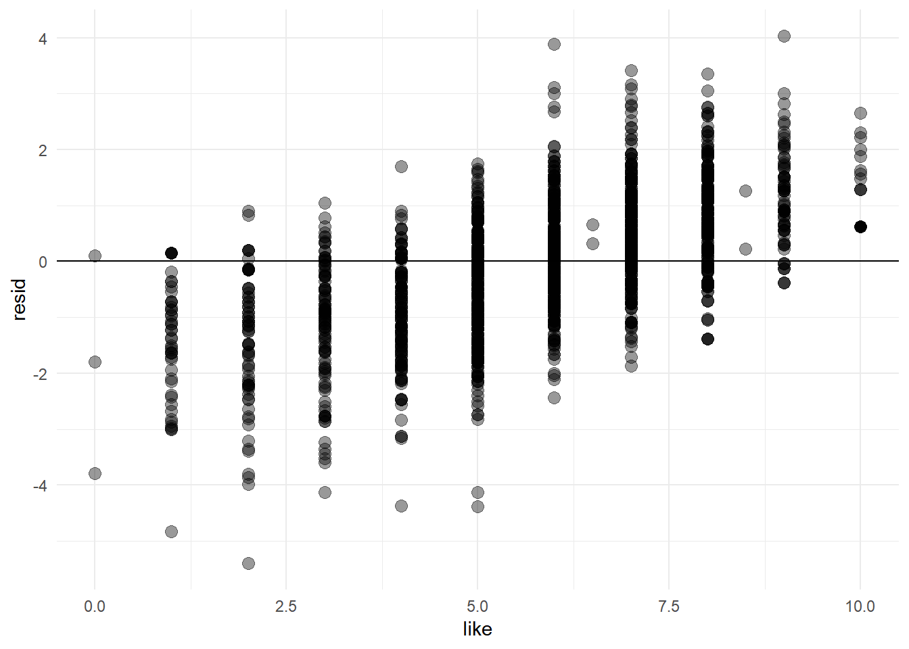

Speed Dating - Encontros e a regressão linear
Nessa análise serão usados dados descrevendo 5000 encontros relâmpagos (speed dating) de 4 minutos envolvendo 310 jovens americanos. Os dados originais foram coletados por professores da Columbia Business School. Os participantes tinham vários encontros de 4 minutos por noite. Após cada um, preenchiam fichas avaliando aqueles com quem se encontraram. Cada linha nos dados representa um desses encontros.
Visão Geral
Abaixo podemos ver um sumário do conjunto de dados e uma descrição sobre as variáveis presentes no dataframe.
## Observations: 4,918
## Variables: 35
## $ gender <int> 0, 0, 0, 0, 0, 0, 0, 0, 0, 0, 0, 0, 0, 0, 0, 0, 0, 0,...
## $ order <int> 4, 3, 10, 5, 7, 6, 1, 2, 8, 9, 10, 9, 6, 1, 3, 2, 7, ...
## $ int_corr <dbl> 0.14, 0.54, 0.16, 0.61, 0.21, 0.25, 0.34, 0.50, 0.28,...
## $ age_o <int> 27, 22, 22, 23, 24, 25, 30, 27, 28, 24, 27, 22, 22, 2...
## $ age <int> 21, 21, 21, 21, 21, 21, 21, 21, 21, 21, 24, 24, 24, 2...
## $ field <fct> Law, Law, Law, Law, Law, Law, Law, Law, Law, Law, law...
## $ race <int> 4, 4, 4, 4, 4, 4, 4, 4, 4, 4, 2, 2, 2, 2, 2, 2, 2, 2,...
## $ from <fct> Chicago, Chicago, Chicago, Chicago, Chicago, Chicago,...
## $ career <fct> lawyer, lawyer, lawyer, lawyer, lawyer, lawyer, lawye...
## $ sports <int> 9, 9, 9, 9, 9, 9, 9, 9, 9, 9, 3, 3, 3, 3, 3, 3, 3, 3,...
## $ tvsports <int> 2, 2, 2, 2, 2, 2, 2, 2, 2, 2, 2, 2, 2, 2, 2, 2, 2, 2,...
## $ exercise <int> 8, 8, 8, 8, 8, 8, 8, 8, 8, 8, 7, 7, 7, 7, 7, 7, 7, 7,...
## $ dining <int> 9, 9, 9, 9, 9, 9, 9, 9, 9, 9, 10, 10, 10, 10, 10, 10,...
## $ museums <int> 1, 1, 1, 1, 1, 1, 1, 1, 1, 1, 8, 8, 8, 8, 8, 8, 8, 8,...
## $ art <int> 1, 1, 1, 1, 1, 1, 1, 1, 1, 1, 6, 6, 6, 6, 6, 6, 6, 6,...
## $ hiking <int> 5, 5, 5, 5, 5, 5, 5, 5, 5, 5, 3, 3, 3, 3, 3, 3, 3, 3,...
## $ gaming <int> 1, 1, 1, 1, 1, 1, 1, 1, 1, 1, 5, 5, 5, 5, 5, 5, 5, 5,...
## $ clubbing <int> 5, 5, 5, 5, 5, 5, 5, 5, 5, 5, 8, 8, 8, 8, 8, 8, 8, 8,...
## $ reading <int> 6, 6, 6, 6, 6, 6, 6, 6, 6, 6, 10, 10, 10, 10, 10, 10,...
## $ tv <int> 9, 9, 9, 9, 9, 9, 9, 9, 9, 9, 1, 1, 1, 1, 1, 1, 1, 1,...
## $ theater <int> 1, 1, 1, 1, 1, 1, 1, 1, 1, 1, 9, 9, 9, 9, 9, 9, 9, 9,...
## $ movies <int> 10, 10, 10, 10, 10, 10, 10, 10, 10, 10, 8, 8, 8, 8, 8...
## $ concerts <int> 10, 10, 10, 10, 10, 10, 10, 10, 10, 10, 7, 7, 7, 7, 7...
## $ music <int> 9, 9, 9, 9, 9, 9, 9, 9, 9, 9, 8, 8, 8, 8, 8, 8, 8, 8,...
## $ shopping <int> 8, 8, 8, 8, 8, 8, 8, 8, 8, 8, 3, 3, 3, 3, 3, 3, 3, 3,...
## $ yoga <int> 1, 1, 1, 1, 1, 1, 1, 1, 1, 1, 1, 1, 1, 1, 1, 1, 1, 1,...
## $ attr <dbl> 6, 7, 5, 7, 5, 4, 7, 4, 7, 5, 5, 8, 5, 7, 6, 8, 7, 5,...
## $ sinc <dbl> 9, 8, 8, 6, 6, 9, 6, 9, 6, 6, 7, 5, 8, 9, 8, 7, 5, 8,...
## $ intel <dbl> 7, 7, 9, 8, 7, 7, 7, 7, 8, 6, 8, 6, 9, 7, 7, 8, 9, 7,...
## $ fun <dbl> 7, 8, 8, 7, 7, 4, 4, 6, 9, 8, 4, 6, 6, 6, 9, 3, 6, 5,...
## $ amb <dbl> 6, 5, 5, 6, 6, 6, 6, 5, 8, 10, 6, 9, 3, 5, 7, 6, 7, 9...
## $ shar <dbl> 5, 6, 7, 8, 6, 4, 7, 6, 8, 8, 3, 6, 4, 7, 8, 2, 9, 5,...
## $ like <dbl> 7, 7, 7, 7, 6, 6, 6, 6, 7, 6, 6, 7, 6, 7, 8, 6, 8, 5,...
## $ prob <dbl> 6, 5, NA, 6, 6, 5, 5, 7, 7, 6, 4, 3, 7, 8, 6, 5, 7, 6...
## $ match_es <dbl> 4, 4, 4, 4, 4, 4, 4, 4, 4, 4, 3, 3, 3, 3, 3, 3, 3, 3,...- gender: sexo do p1, 0 = mulher.
- order: Número (n-ésimo) do encontro, na noite.
- int_corr: correlação entre os interesses de p1 e p2.
- age_o: idade de p2.
- age: idade de p1.
- field: campo de estudo de p1.
- race: raça de p1. Black=1; European=2; Latino=3; Asian=4; Native American=5; Other=6.
- from: de onde p1 é.
- career: que carreira p1 quer seguir.
- sports ~ yoga: quão interessado p1 é em cada uma dessas atividades (1 a 10).
- attr: quão atraente p1 achou p2.
- sinc: quão sincero p1 achou p2.
- intel: quão inteligente p1 achou p2.
- fun: quão divertido p1 achou p2.
- amb: quão ambicioso p1 achou p2.
- shar: quanto p1 achou que compartilha interesses e hobbies com p2.
- like: quanto p1 gostou de p2.
- prob: que probabiliade p1 acha que p2 tem de querer se encontrar novamente com ele (1 a 10).
Dados
NAs foram removidos para realizar as análises, nos deixando com uma amostra contendo 3663 participantes
Antes de fazer qualquer análise envolvendo regressão irei fazer um descritivo do dados através de algumas rápidas análises.
dating$race = as.factor(dating$race)
dating$race <- revalue(dating$race, c("1"="Black", "2"="European", "3"="Latino", "4"="Asian", "5"="Native American", "6"="Other"))
dating <- na.omit(dating)
dating %>%
group_by(gender, race) %>%
mutate(sex = ifelse(gender == 0, "Feminino", "Masculino")) %>%
ggplot(aes(x = race, fill = sex)) +
geom_bar(stat = 'count', position='dodge') +
theme(plot.title = element_text(hjust = 0.5)) +
ggtitle("Proporção de gênero por raça") +
labs(x = "", y = "")
Podemos ver que no conjunto de dados não existem nativo-americanos e que a maior quantidade pessoas de ambos os sexos é Européia. Também é fácil perceber que a proporção de homens e mulheres não varia muito.
from<-as.data.frame(table(unlist(dating$from)))
from<-head(from[order(-from$Freq),])
from %>%
ggplot(aes(x = reorder(Var1, Freq),
y = Freq,
fill = Var1)) +
geom_bar(stat = 'identity') +
theme(legend.position = 'none', plot.title = element_text(hjust = 0.5)) +
ggtitle("Lugares com maior quantidade de participantes") +
labs(x ="", y ="")
Através do gráfico acima é possível ver os estados com maior quantidade de participantes e além disso, que existe uma enorme diferença entre o quarto e o terceiro. Nova York é o lugar com o maior número de participantes.
career<-as.data.frame(table(unlist(dating$career)))
career<-head(career[order(-career$Freq),])
career %>%
ggplot(aes(x = reorder(Var1, Freq),
y = Freq,
fill = Var1)) +
geom_bar(stat = 'identity') +
theme(legend.position = 'none', plot.title = element_text(hjust = 0.5)) +
ggtitle("Profissões mais populares entre os participantes") +
labs(x ="", y ="")
A profissão mais popular entre os participantes é Advogado.
dating %>%
mutate(age1 = median(age),
sex = ifelse(gender == 0, "Feminino", "Masculino")) %>%
ggplot(aes(x = age, fill = sex))+
geom_bar(color = 'black') +
facet_wrap(~sex) +
labs(x='', y ='') +
ggtitle("distribuição de idade dos participantes (Feminino x Masculino)") +
theme(legend.position = 'none', plot.title = element_text(hjust = 0.5))
De acordo com a distribuição de idade dos participantes podemos ver que para ambos os sexos ela é semelhante e que a grande maioria dos participantes dos chamados encontros relâmpagos tem em torno de 25 (eu diria entre 22 e 28)
Regressão
Agora que demos uma rápida olhada nos dados, podemos pensar em alguma pergunta envolvendo regressão, mas antes o que é regressão?
Regressão é uma técnica que permite explorar e inferir a relação de uma variável dependente com variáveis independentes específicas. A análise da regressão pode ser usada como um método descritivo da análise de dados (por exemplo, o ajustamento de curvas) sem serem necessárias quaisquer suposições acerca dos processos que permitiram gerar os dados. Regressão designa também uma equação matemática que descreva a relação entre duas ou mais variáveis.
Pergunta
Um fator determinante em um encontro, seja relâmpago ou não, é saber se as duas pessoas gostaram uma da outra. Diante disso, qual a influência de um atributo físico como a beleza em um encontro? Essa influência, seja determinante ou não, é a mesma para ambos os sexos?
Homens
homens <- dating %>%
filter(gender == 1)
modelo_masculino = lm(like ~attr + fun + intel, data = homens)
tidy(modelo_masculino, conf.int = TRUE)## # A tibble: 4 x 7
## term estimate std.error statistic p.value conf.low conf.high
## <chr> <dbl> <dbl> <dbl> <dbl> <dbl> <dbl>
## 1 (Intercept) 0.548 0.144 3.81 1.44e- 4 0.266 0.831
## 2 attr 0.386 0.0178 21.7 4.81e-93 0.351 0.421
## 3 fun 0.338 0.0195 17.3 3.37e-62 0.300 0.376
## 4 intel 0.145 0.0213 6.80 1.43e-11 0.103 0.186glance(modelo_masculino)## # A tibble: 1 x 11
## r.squared adj.r.squared sigma statistic p.value df logLik AIC
## * <dbl> <dbl> <dbl> <dbl> <dbl> <int> <dbl> <dbl>
## 1 0.540 0.539 1.19 704. 1.03e-302 4 -2876. 5761.
## # ... with 3 more variables: BIC <dbl>, deviance <dbl>, df.residual <int>O resultado acima nos dá como resultado à seguinte equação:
like = 0.54 + 0.38 x (attr) + 0.34 x (fun) + 0.14(intel), com R² = 0.54
O valor de 0.54 para o coeficiente de determinação indica que a qualidade do ajuste do modelo é boa.
tidy(modelo_masculino,
conf.int = TRUE,
conf.level = 0.95) %>%
filter(term != "(Intercept)") %>%
ggplot(aes(term, estimate, ymin = conf.low, ymax = conf.high)) +
geom_errorbar(size = 0.8, width= 0.4) +
geom_hline(yintercept = 0, colour = "red") +
labs(x = "Variável",
y = "Valor estimado(95% de confiança)")
Podemos observar que ambos os atributos atraente, divertida e inteligente tem um impacto positivo, com 95% de confiança, no quanto os participantes do sexo masculino irão gostar do seu par. Isto é, quanto mais atraente, engraçado e inteligente um participante achar seu par, maior a chance de gostar dele. Atributos como beleza e quão divertida a pessoa é são mais decisivos que sua inteligência como pode ser visto no gráfico acima.
Visualizando o modelo
homens %>%
add_residuals(model = modelo_masculino) %>%
ggplot(aes(x = like, y = resid)) +
geom_point(alpha = 0.4, size = 3) +
geom_hline(yintercept = 0)
Mulheres
mulheres <- dating %>%
filter(gender == 0)
modelo_feminino = lm(like ~attr + fun + intel, data = mulheres)
tidy(modelo_feminino, conf.int = TRUE)## # A tibble: 4 x 7
## term estimate std.error statistic p.value conf.low conf.high
## <chr> <dbl> <dbl> <dbl> <dbl> <dbl> <dbl>
## 1 (Intercept) -0.101 0.127 -0.792 4.29e- 1 -0.350 0.149
## 2 attr 0.337 0.0172 19.6 1.45e-77 0.303 0.371
## 3 fun 0.356 0.0171 20.8 1.94e-86 0.322 0.389
## 4 intel 0.255 0.0191 13.4 4.48e-39 0.218 0.293glance(modelo_feminino)## # A tibble: 1 x 11
## r.squared adj.r.squared sigma statistic p.value df logLik AIC BIC
## * <dbl> <dbl> <dbl> <dbl> <dbl> <int> <dbl> <dbl> <dbl>
## 1 0.635 0.635 1.15 1077. 0 4 -2896. 5801. 5829.
## # ... with 2 more variables: deviance <dbl>, df.residual <int>O resultado acima nos dá como resultado à seguinte equação:
like = 0.41 + 0.33(attr) + 0.35(fun) + 0.25(intel), com R² = 0.63
O valor de 0.63 para o coeficiente de determinação indica que a qualidade do ajuste do modelo é melhor que para o modelo masculino.
tidy(modelo_feminino,
conf.int = TRUE,
conf.level = 0.95) %>%
filter(term != "(Intercept)") %>%
ggplot(aes(term, estimate, ymin = conf.low, ymax = conf.high)) +
geom_errorbar(size = 0.8, width= 0.4) +
geom_hline(yintercept = 0, colour = "red") +
labs(x = "Variável",
y = "Valor estimado(95% de confiança)")
Semelhante aos homens, podemos ver que os atributos atraente e divertido e inteligente tem um impacto positivo, com 95% de confiança, no quanto os participantes do sexo feminino irão gostar do seu par. Sendo a inteligência o fator menos decisivo entre os 3.
Visualizando o modelo
mulheres %>%
add_residuals(model = modelo_feminino) %>%
ggplot(aes(x = like, y = resid)) +
geom_point(alpha = 0.4, size = 3) +
geom_hline(yintercept = 0)